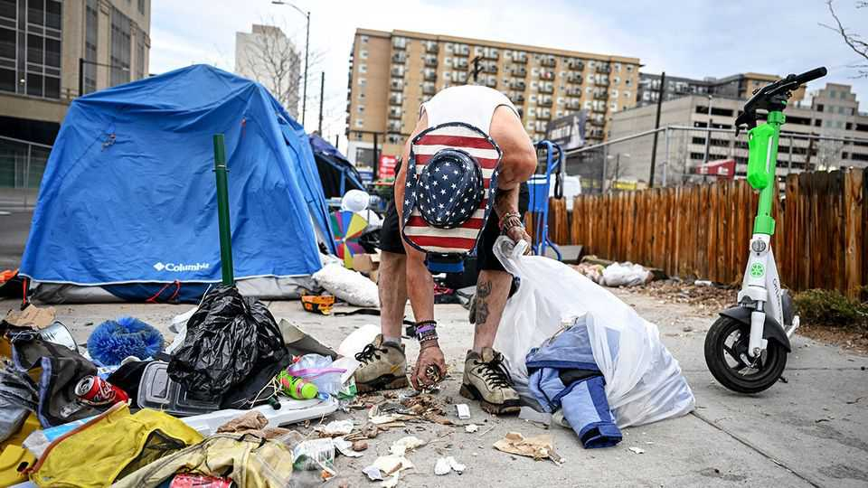

As American cities grapple with homelessness, one offers a fix
Denver’s answer to a stubborn problem
June 18th 2026

DENVER’s mayor is Mike Johnston, with a “t”. Its unofficial “mayor of the streets” is Mike Johnson, with a teardrop tattoo and a soft voice—your correspondent can barely hear him over a karaoke performance of a Guns N’ Roses song in the cafeteria of one of Denver’s new homeless shelters. For years, Mr Johnson’s life was a haze of pills, heroin and street living. Now he spends his days helping Denverites like him find shelter or a place to detox. That is easier than it used to be: Denver’s tent camps have largely disappeared.
Homelessness in America declined by 3% between 2024 and 2025, yet the number of people without a home is still 31% higher than it was before the covid-19 pandemic. Since 2020 tents have proliferated, particularly in warm western and southern cities where people can camp year-round. This is a problem—for the homeless people who lack shelter, for locals who feel their cities have been overtaken by encampments, and for Democrats, who run many big cities and whom Donald Trump blames for urban chaos. Early evidence suggests Denver, led by Mr Johnston, a Democrat, may offer a solution.
In recent years policies on homelessness have swung between extremes. Officials struggled to balance compassion for society’s most vulnerable—many of whom suffer from mental illness or drug addiction—with the concerns of residents and businesses tired of tiptoeing around faeces and needles. Inaction led to a political reckoning in cities such as San Francisco, where the mayor in charge while homelessness and public drug use ballooned was ousted by a moderate reformer.
A growing number of cities are offering a blunt solution. In 2024 the Supreme Court ruled in Grants Pass v Johnson that it was not cruel and unusual to punish homeless people for sleeping outside when they have nowhere else to go. More than 300 municipalities have since enacted camping restrictions, an approach with its own challenges. Business owners may be happier, but camping bans too often shift the homeless into hiding, hospitals and jails.

Denver has had a camping ban on the books for years, but saw its unsheltered population surge nonetheless. In 2023, when Mr Johnston took office, nearly 1,500 people were living on the streets, a large number for a city with fewer than 730,000 residents. “People are moving out of blue cities that don’t solve this problem,” the mayor explains. So he declared a state of emergency over homelessness. Since then the number of people living outside has fallen by 64%. For several years overall homelessness continued to creep up (see chart) with some people sheltered but not permanently housed. Yet Denver recently turned a corner there, too. The city’s total number of homeless fell by roughly 12% between 2025 and 2026.
Like many ambitious policies, Denver’s plan has depended on targeted investment and relentless focus. First, the city used funds from the American Rescue Plan Act (ARPA), Joe Biden’s pandemic stimulus bill, to buy and lease new shelters. Roughly half of the $158m the mayor’s office reported spending on its initiative came from the federal government. New hotels and tiny-home communities added roughly 1,000 shelter units.
Chester Burney has been living at the Aspen, a converted hotel, for 16 months. “After my wife died, I spiralled,” he recalls. “It’s nice to have somewhere you can try to get back on track.” Crucially, the programme includes not just housing but support. Each floor has “care co-ordinators” who help “guests” get new IDs, food stamps and housing. Mr Burney now works at a burger restaurant and is planning to move into his own place in August. At another project, Elati Village, tiny homes were built in a city car park for $25,000 apiece. The usual NIMBY concerns may have been eased by a preference for neat cottages over camps.
“This entire block was encamped,” says Cole Chandler, the head of Denver’s Department of Housing Stability. He’s staring at a post office where a tent city, home to more than 100 people, used to be. Now, the streets are clean. Rockies and Cubs fans amble towards the ballpark for an afternoon baseball game. The new shelters allowed officials to bring entire encampments inside at once. In many cities homeless people sometimes decline shelter because they can’t bring their pets or belongings. So Denver allowed that.
Once the city cleared tents from an area, it closed that part of downtown to camping. Mr Johnson, the mayor of the streets, now attends a call each morning where officials discuss reports of new camps and plan their outreach. If someone erects a tent “you might be there for a day, if you’re lucky,” says Ana Miller, an advocate for homeless Denverites. Ms Miller laments this change. Yet the mayor (both mayors, in fact) might consider her testimony proof that the plan is working.

Denver’s early success is not without qualifications. A double homicide rocked the Aspen shelter in 2024. About one-third of people who leave city-owned shelters end up in jail, back on the streets or dead. “Our biggest challenge right now is the throughput into permanent housing,” admits Mr Johnston. A city budget crunch comes as the federal government is cutting housing vouchers and Medicaid, America’s health insurance for the poor.
Indeed the biggest question for cities may be how much progress they can make without federal help. Mayors routinely watch experiments elsewhere and adapt them for their own cities. “I like to think of Denver as the quintessential pragmatic approach,” says Samantha Batko, who has been evaluating the city’s policies at the Urban Institute, a think-tank. She suggests that local governments can make gains, even without ARPA dollars, by co-ordinating outreach and tracking new camps in real time. Indeed, Dallas saw success with a similar approach. Other mayors are eager to act. Mr Johnston recalls how three contacted him in a single day to ask about Denver’s homelessness plan. “We want to do this,” they told him. ■
Stay on top of American politics with The US in brief, our daily newsletter with fast analysis of the most important political news, and Checks and Balance, a weekly note that examines the state of American democracy and the issues that matter to voters.